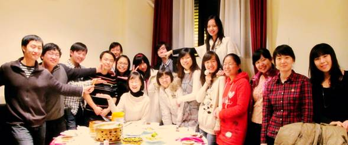
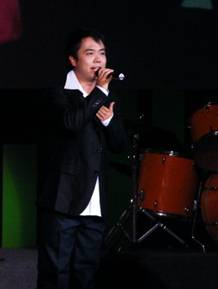

My 28th Birthday
Hello, everyone! My name is Rujia Liu. I used to do a lot of problem solving and problemsetting, but after graduated from Tsinghua University, I'm spending more and more time on my company :(
(You may realized that the paragraph above is copied from the texts of my 3rd, 4th and 5th contest, but that's me, lazy me.)
This time, my contest is all about myself. Every problem has a short story that is related to me. If you're interested, you can ask me (rujia.liu@gmail.com) :)

Me in a singing competition
This is a very important birthday for me, so I really want you enjoy this contest and know more about me. Please feel free to email me if you're interested in some non-algorithmic aspects of this contest (e.g. where to find the games I mentioned in the problems).
Ah, forgot to mention, problem A, B, C and K are good starts :)
A Special "[H]appy Birthday" Song!!!
"Center" of [p]erimeter midpoints
Eg[y]ptian Fractions (HARD version)
In an effor[t] to Change History
Planning [m]obile robot on Tree (EASY Version)
Here is the whole Problemset(PDF), and the Gift Package.
(Do you know why some of the letters are enclosed by a pair of brackets?)
As usual, there is a gift package on the contest website that contains some additional I/O data, special judge or data visualizer. Please make best use of it :)
Thanks Md. Mahbubul Hasan for problem A, B, C, H, J, K, N, Yubin Wang for problem D, E, F, G, I, L, N, P, Q, Yao Li for problem F, G, M, N, O, P, Feng Chen for problem A, B, C, H, J, K, M, O, and Yi Yang for problem M and O.
I hope you enjoy this contest, and my birthday :)